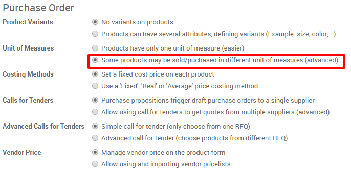

In day-to-day business, it may happen that your supplier uses a different unit of measure than you do in sales. This can cause confusion between sales and purchase representative and even make you lose a lot of time converting measures. Luckily in YuanCloud, you can handle different units of measures between sales and purchase very easily.
让我们看如下例子：
- You buy water from a supplier. The supplier is american and sells his water in Gallons. Your customers however are European. You would thus like to see your purchases quantities expressed in Gallons and the sold quantities in Liters.
- You buy curtains from a supplier. The supplier sells you the curtains in the unit roll and you sell the curtains in square meters.
配置
安装采购和销售模块
The first step is to make sure that the apps Sales and Purchase are correctly installed.
 |  |
|---|---|
允许计量单位选择
Enter the purchase module, select and tick the Some products may be sold/purchased in different unit of measures (advanced) box.
指定销售和采购的计量单位
标准计量单位
Let's take the classic units of measures existing in YuanCloud as first example. Please remember that differents units of measures between sales and purchase necessarily need to share the same category. Categories include: Unit, weight, working time, volume, etc.
小技巧
It is possible to create your own category and unit of measure if it is not standard in YuanCloud (see next chapter).
Let's assume we buy water from our vendors in Gallons and sell to our customers in Liters.
我们进入采购模块并选择：[UNKNOWN NODE title_reference]。
Create your own product or select an existing one. In the products general information you have the possibility to select the Unit of measure (will be used in sales, inventory,...) and the Purchase Unit of Measure (for purchase).
在这里选择**计量单位**为**升**以及**采购的计量单位**为**加仑**。
创建你自己的计量单位以及计量单位种类
Let's take now our second example (you buy curtains from a supplier, the supplier sells you the curtains in the unit roll and you sell the curtains in square meters).
The two measures are part of two different categories. Remember, you cannot relate an existing measure from one category with an existing measure of another category. We thus first have to create a shared Measure Category where both units have a conversion relationship.
To do so, go into your sales module select . Create a new unit of Measure Category by selecting the dropdown list and clicking on create and edit (see picture below).
Create a new unit of measure. In this case our category will be called Inter-Category-Computation.

The next step is to create the Rolls and Square meter units of measure and to link them to the new category. To do so, go into your purchase module select .
创建两个新的单位：
- The Roll unit who is part of the Inter-Category-Computation category and is the Reference Unit type (see picture below). The Reference Unit type is the measure set as a reference within the category. Meaning that other measures will be converted depending on this measure (ex: 1 roll = 10 square meters, 2 rolls = 20 square meters, etc.).

- For the Square Meter, we will specify that
1 Roll = 10 square metersof curtain. It will thus be necessary to specify that as type, the square meter is bigger than the reference unit. The Bigger Ratio is10asone Roll = 10 square meters.
It is now possible to input square meters as Unit of measure and a Roll as Purchase Unit of Measure in the product form.